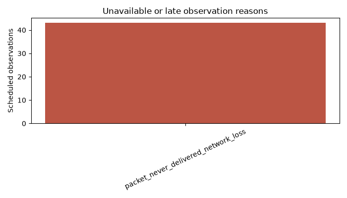
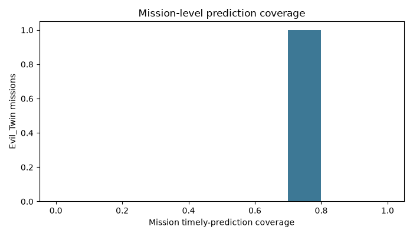
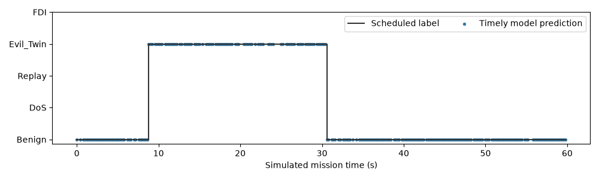

Simulated telemetry only. Not SITL, captured Wi-Fi, a physical vehicle, or real-world validation.
Scheduled samples: 300; timely predictions: 257 (85.7% coverage); Evil_Twin end-to-end recall: 78.9%; conditional recall on scored rows: 100.0%.
False alert missions among benign runs: 0/0; false episodes per benign mission-minute: 0.000. Communication warnings are separate from attack alerts.



Full schedule ledger: observation_audit.csv. Label-free predictions: predictions_label_free.csv. Metrics and confidence intervals: metrics.json.